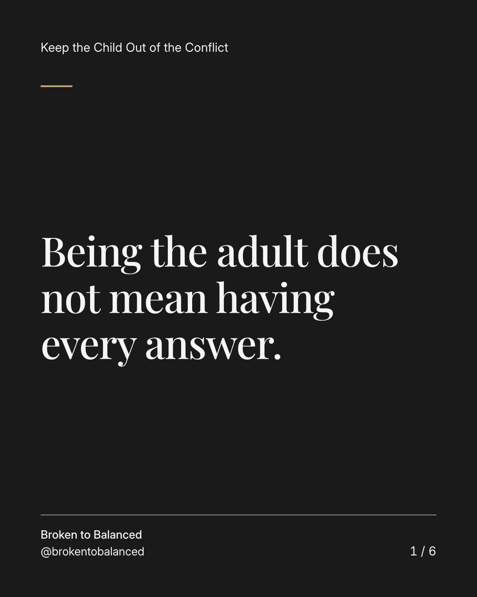
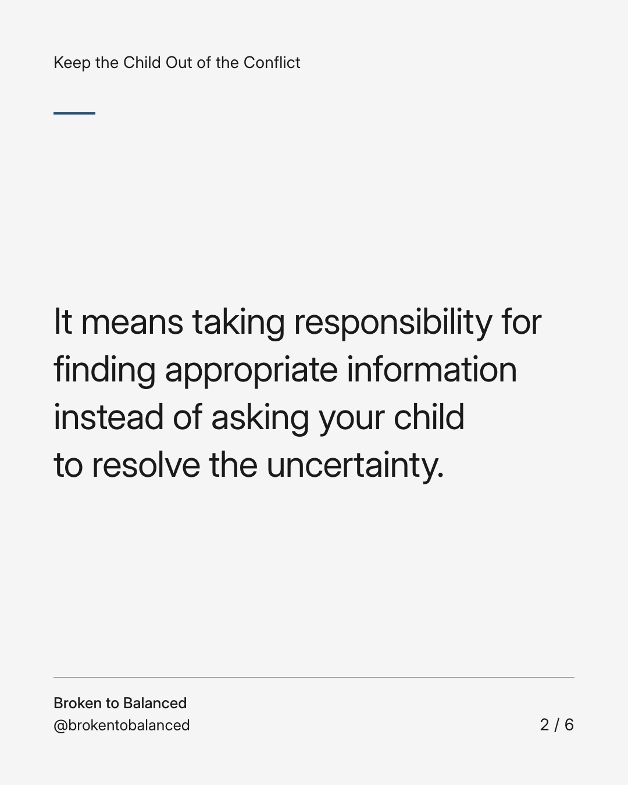
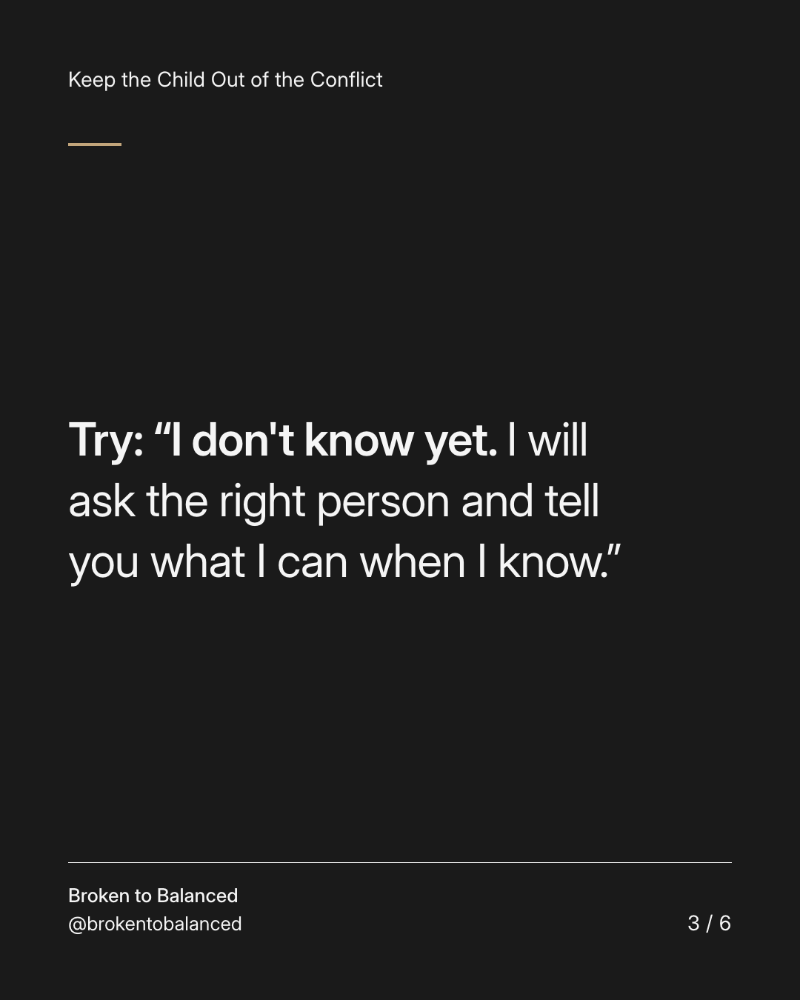
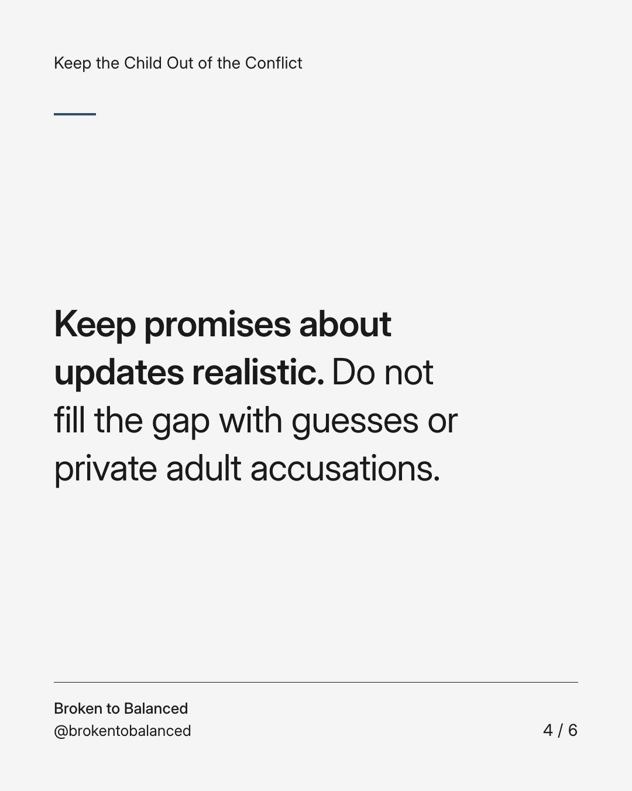
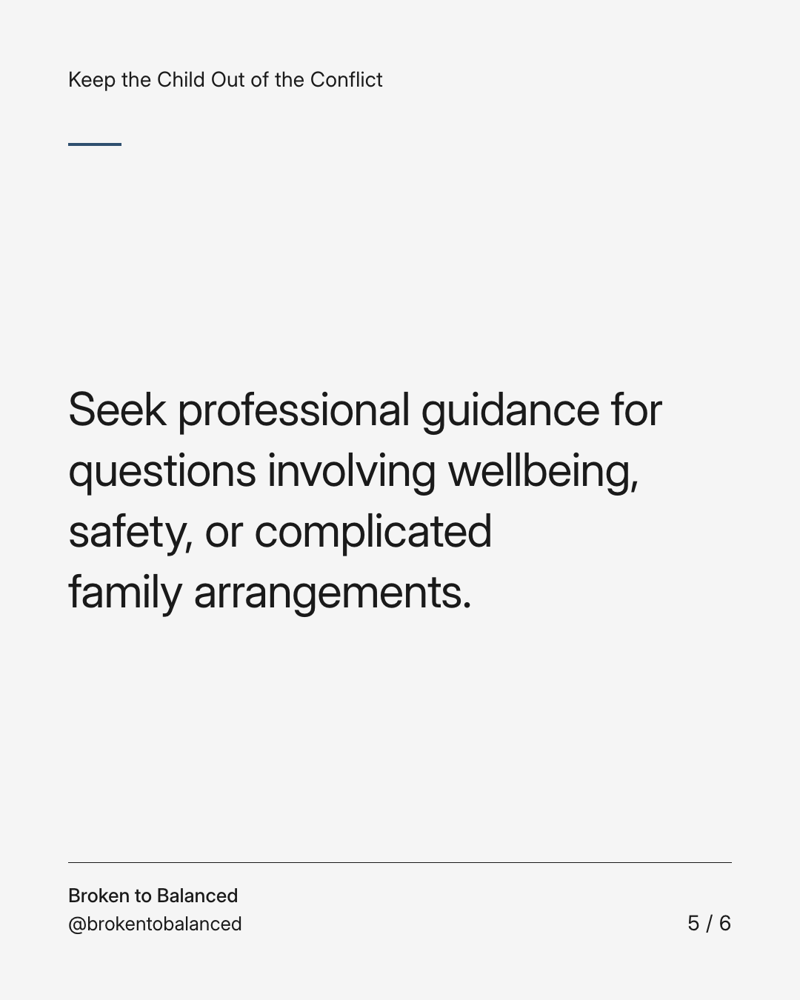
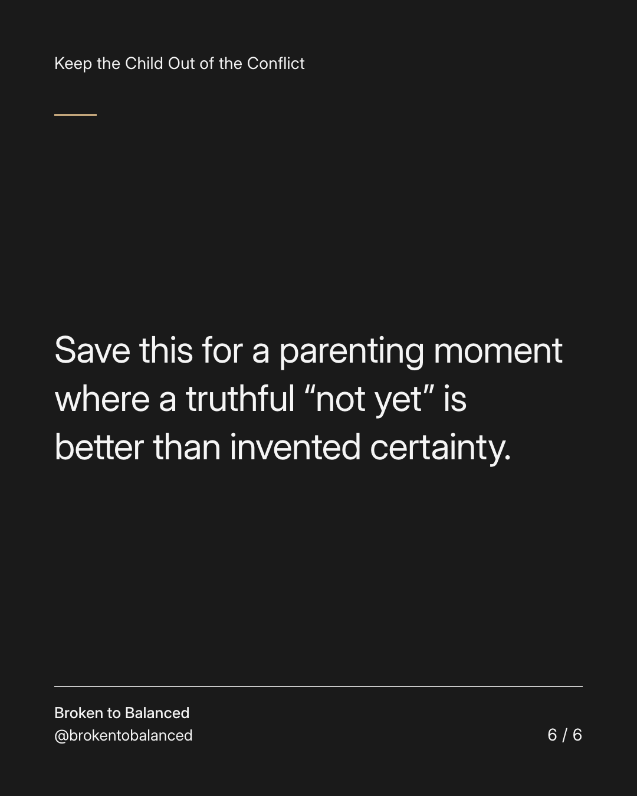

Exact text and accessibility text
Being the adult does not mean having every answer.
Slide 1 of 6. Being the adult does not mean having every answer.


Exact text and accessibility text
It means taking responsibility for finding appropriate information instead of asking your child to resolve the uncertainty.
Slide 2 of 6. It means taking responsibility for finding appropriate information instead of asking your child to resolve the uncertainty.


Exact text and accessibility text
Try: “I don't know yet. I will ask the right person and tell you what I can when I know.”
Slide 3 of 6. Try: “I don't know yet. I will ask the right person and tell you what I can when I know.”


Exact text and accessibility text
Keep promises about updates realistic. Do not fill the gap with guesses or private adult accusations.
Slide 4 of 6. Keep promises about updates realistic. Do not fill the gap with guesses or private adult accusations.


Exact text and accessibility text
Seek professional guidance for questions involving wellbeing, safety, or complicated family arrangements.
Slide 5 of 6. Seek professional guidance for questions involving wellbeing, safety, or complicated family arrangements.


Exact text and accessibility text
Save this for a parenting moment where a truthful “not yet” is better than invented certainty.
Slide 6 of 6. Save this for a parenting moment where a truthful “not yet” is better than invented certainty.
Exact caption
Plain-text fallback: select and copy the caption.